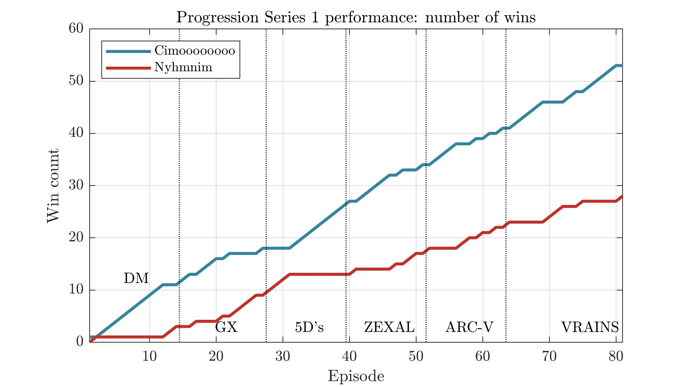
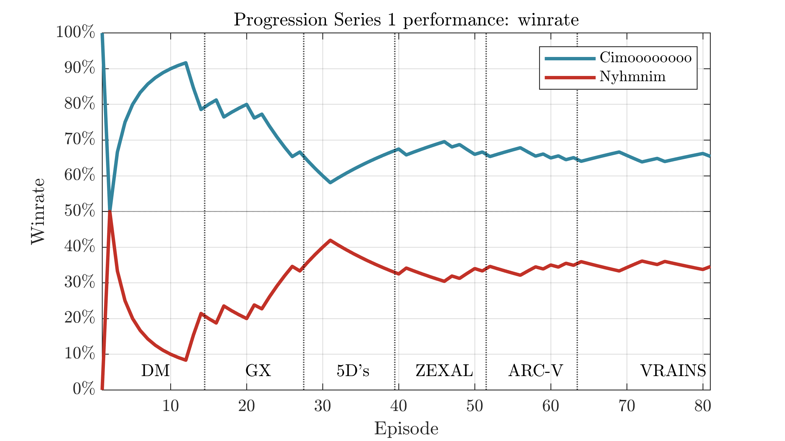
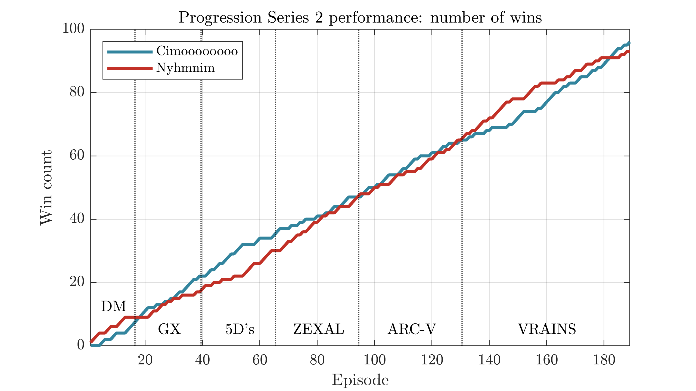
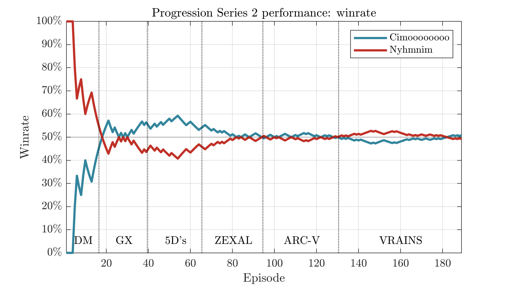

Introduction#
Cimoooooooo, along with Nyhmnim, launched an iconic Yugioh video series back in 2020: the Progression Series. Each episode has them open a box of the next set in chronological order, they build decks with their accumulated cards, and play a best-of-3 match. Once they caught up to the main sets released at the time, in 2022, they restarted with the Progression Series 2, adding more sets and rule changes.
The series has always been a mixture of entertainment and competition, with each player's records being tracked and them both trying to take the lead. Thus, I found it interesting to record the results and make some visuals of how they did, which I'll present below.
Season 1#

This is the cumulative win count of each player, by episode. Cimo took a lead early and maintained it throughout. I've also added marks corresponding to each "era" of the game. That steep slope in 5D's might bring back some memories, as that shows Cimo's massive Blackwing-driven win streak.

Alternatively, we could look at the winrate at each episode. The lines mirror each other as they always must add up to 100%, and whoever's above the middle line is in the lead.
Cimo maintained a fairly stable ~2:1 ratio from 5D's onwards.
Season 2#
Aside from including more sets, this season notably added more aggressive catch-up mechanics, with players getting to ban cards on losing 3 times in a row (and more bans for continued losses). The changes seem to have been well-designed, as their performance was much closer this time:

Each player had a period where they pulled significantly ahead, but there were many tied points and crossovers throughout.

Notes#
Rest in peace, Cimo.